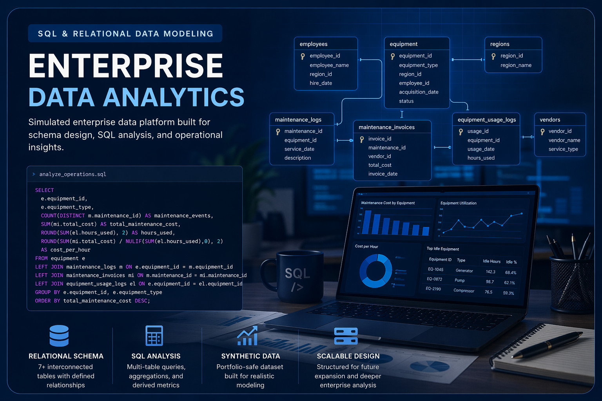

SQL & Relational Data Modeling Project
Enterprise Data Analytics
Simulated enterprise data platform designed to model operations, workforce, maintenance, asset activity, and financial transactions through a relational SQLite database.
Built as a scalable SQL project focused on schema design, synthetic data generation, multi-table analysis, and analytical workflows that mirror the types of structures and business questions found in enterprise environments.
Project Context
Purpose and Scope
Enterprise Data Analytics was created to demonstrate applied SQL skills through a realistic, expandable data model rather than isolated practice queries or one-off sample tables.
Primary Objectives
- Design a relational schema that mirrors how enterprise systems organize operational and financial data
- Build synthetic but realistic datasets to support portfolio-safe analysis
- Develop SQL queries that answer business-facing questions around utilization, cost, efficiency, and operational performance
- Create a foundation that can scale into additional domains over time
Current Functional Scope
- Asset and equipment lifecycle tracking
- Workforce and regional organizational structure
- Maintenance activity and invoice-based cost analysis
- Equipment usage logging and utilization analysis
- Vendor and service relationship modeling
Data Model
Relational Schema Architecture
The database is structured around interconnected operational entities so analyses can move beyond single-table summaries into cross-functional business questions.
Core Entity Groups
- Equipment
- Employees
- Regions
- Vendors
- Maintenance Logs
- Maintenance Invoices
- Equipment Usage Logs
Modeling Priorities
- Primary and foreign key relationships for relational consistency
- Structured synthetic data to support realistic joins and aggregations
- Metrics that connect cost, usage, downtime, and operational behavior
- Schema flexibility for future expansion into additional enterprise domains
Current Analysis Areas
Analytical Use Cases
The current repository structure already supports multi-table analysis across operational efficiency, maintenance burden, and cost behavior.
Idle Equipment Risk Detection
Identifies assets with high idle time relative to productive usage to highlight potential inefficiency or underutilization.
Maintenance Cost by Equipment
Measures maintenance burden at the asset level through event counts and invoice-based cost aggregation.
High Cost vs. Low Utilization
Connects maintenance spend with usage levels to identify assets that may be costly relative to operational value.
Cost Relative to Usage
Uses normalized cost metrics to compare equipment efficiency beyond total spend alone.
Technical Workflow
Build and Analysis Process
The project combines database design, synthetic data generation, query development, and exported analytical outputs in a way that supports both technical review and portfolio presentation.
Current Workflow
- Schema creation through SQL table definition and relationship design
- Sample dataset creation using Microsoft Excel and CSV import into SQLite via DB Browser
- Query development and validation for business-focused analytical prompts
- Export of SQL files and result sets for portfolio documentation and future visualization work
Near-Term Expansion
- Python and Jupyter-based visual outputs from query results
- Interpretive findings and recommendations layered onto existing analysis files
- Broader enterprise modeling in areas such as HR activity, billing/accounting, and work management
- Additional schema growth to support more advanced business intelligence workflows
Project Positioning
Why This Project Matters
This repository is intended to demonstrate one of the most transferable technical skills in analytics work: the ability to structure data intentionally and extract useful business insight from it through SQL.
What It Demonstrates
- Relational data modeling fundamentals
- Multi-table joins and aggregation logic
- Derived metric development and comparative analysis
- System-oriented thinking beyond single dashboard outputs
Project Status
This is an active work in progress. The current implementation focuses on a strong enterprise operations base model, with additional subject areas and deeper analysis planned over time.
Project Navigation
Source and Portfolio Links
Review the repository directly or return to the main portfolio landing page.
Main Portfolio
Return to the primary portfolio landing page and other featured projects.
Source Repository
Review the full repository, documentation, schema files, and analysis artifacts on GitHub.